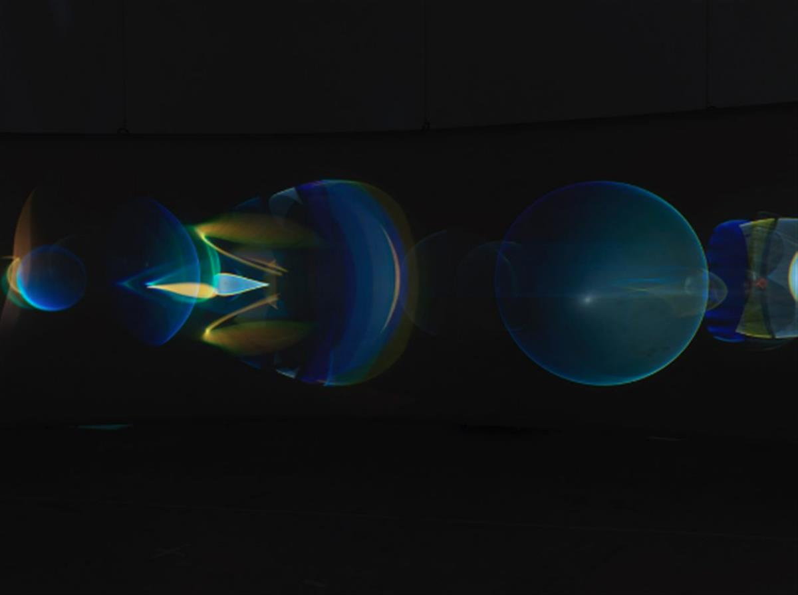
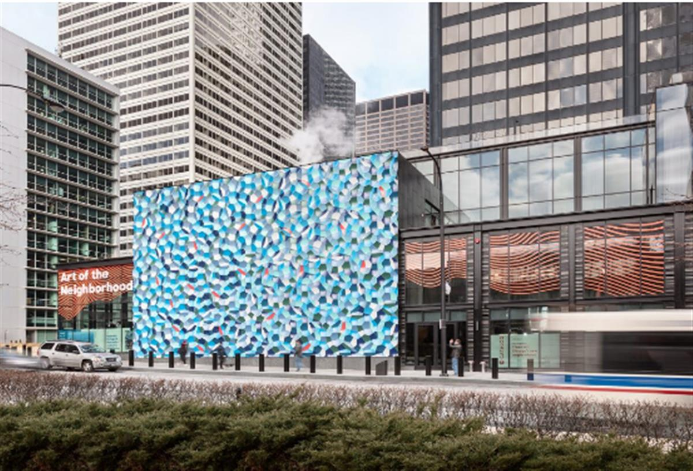
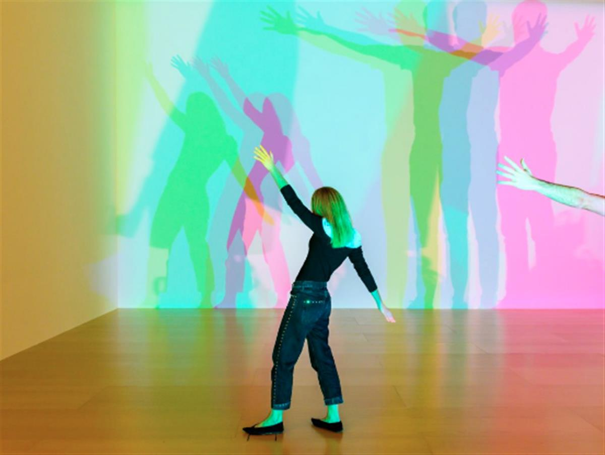

Olafur Eliasson beside his art installation titled Moss Wall at Tate Modern in London on July 9, 2019. Photo Judith Burrows/Hulton Archive/Getty Images.
Olafur Eliasson beside his art installation titled Moss Wall at Tate Modern in London on July 9, 2019. Photo Judith Burrows/Hulton Archive/Getty Images.
‘The Fastest Way to Make a Populist Into a Humanist Is to Listen’: Artist Olafur Eliasson on How His Latest Work Encourages Empathy
The artist says his new show at Tanya Bonakdar Gallery in New York is meant to encourage audiences to take a breath.
Devorah Lauter, March 5, 2021
In these turbulent times, creativity and empathy are more necessary than ever to bridge divides and find solutions. Artnet News’s Art and Empathy Project is an ongoing investigation into how the art world can help enhance emotional intelligence, drawing insights and inspiration from creatives, thought leaders, and great works of art.
The Danish-Icelandic artist and climate activist Olafur Eliasson was pacing around his studio and had vanished from the camera’s field of vision. He excused himself politely.
“Sometimes, to better concentrate, I might walk around the table. Just so you know I have you with me at all times,” he explained, breathing heavily into his microphone during a video interview with Artnet News about his show at Tanya Bonakdar Gallery in New York, which is titled after a new artwork (“Your Ocular Relief,” March 9–April 24).
“I think that through moving, you also access other parts of your brain,” he said.
For years, Eliasson has been exploring the possibilities of embodied experiences that can sharpen our awareness of our surroundings and each other. He speaks in terms of thinking “through your body,” or “eliminating the boundary between the brain and the body, the body and space, the body and time.” In his work, he makes heavy use of natural phenomena, particularly light, which he concocts into immersive, wonder-inspiring art installations and sculptures.
Drawing inspiration from, and collaborating with, hip hop artists, philosophers, cooks, perfume-makers, architects, economists, political commentators, anthropologists, dancers, and other artists, Eliasson is constantly looking to deepen connections across disciplines. His art, as he puts it, is an opportunity to “host” divergent viewpoints and spark debate.
After a little more pacing, Eliasson sat down and said he hoped his new show would give viewers a chance to “exhale.” The trick, he said, is to challenge visitors, but also to leave them feeling seen.

Olafur Eliasson, Your ocular relief (2020). Courtesy of the artist.How doesYour ocular relieffit into the context of your work, and what possible new directions does it take?
It’s essentially a work that uses light and projections. So it’s very much an extension of my work. It’s not really different in that sense.
One and a half years ago, I started thinking about the way everything was changing. It seems so far away now, when there were wildfires and climate concerns related to that. We had this quite hectic year, all the way back to Trump winning the election, the killing at the Saudi embassy [in Turkey], and the general from Iran being shot in Iraq by the Americans. And I thought, “Oh my God, what a hectic time we’ve come out of!” Two months later, we had Covid, and just two and a half months into Covid, we had the George Floyd killing, and we gradually realized that 2019 was just the warm up.
So I thought a lot about how everything seemed to escalate, and the kind of destabilization that came out of that. Because I have worked with stress reduction and meditation, I was very intrigued by exhale and relief, so from the beginning, I wanted to do an artwork that was somehow welcoming this notion of the exhale.
We are incredibly over stimulated. We have the challenge of concentrating, because social media is omnipresent. That’s the world we are in now, and that inspired me to try to react to it with what I had worked on already for some time, namely lens flares and glares. In the science of optics, a flare is like the waste product, light not being used for what it’s supposed to be used. I thought that’s a nice narrative, because it’s so exceptionally beautiful, but it’s a little bit like homeless light.
Homeless light, I love that idea.
In the spirit of the times we live in, there’s a diversification of the lens because we have lenses everywhere. Everyone can make their own news. Everyone can post themselves, and this is of course complex, but nevertheless, this is why George Floyd was filmed. And one can say that the decentralization of lenses has led to a new kind of witness. Namely, that you can actually exercise your point of view by filming it, almost like a crowdsourcing of evidence.
As it turns out, the film [in the exhibition], which is an abstract film with many colors—if anything, it looks like a psychedelic or experimental film with no narrative. It is really analog. It’s really real world. It’s surprising the extent to which you can clearly see there are no pixels. This is a non-digital thing, which is not to suggest that I’m the binary opposite of the digital. I’m not against digital, but I am interested in maintaining a sense of the real, because the digital has also introduced a questionable source of reality. It’s suddenly important that the film is analog.
In terms of immersive things, I’m just very interested that with four handfuls of lenses and lights, and a few small motors that come from car windshield wipers, you have something that looks like it’s made by a giant computer. I think it’s important not to forget that.

Olafur Eliasson, Atmospheric wave wall (2020). Willis Tower, Chicago. Photo: Darris Lee Harris. © 2020 Olafur Eliasson.What else can you tell us about the show?
In the exhibition, there are a couple things that might come across as astronomical models, [suggesting an] idea of outer space, and the ability to imagine what is going on inside a black hole. These places are beyond our imagination. We are all very much aware that there is something behind that horizon, things we do not know. The dangerous thing is when we don’t know that we don’t know them, because then we take reality for granted as it is, and then we stop questioning it.
What other ideas animated these works?
If you look at society at large, there is an increasing sense of polarization. People disagree. And it seems to be the norm that they don’t seek to address conflict in other ways than making it into abuse. It would be great if we could come together and sit. We don’t have to hold hands in a circle and smoke, just to host the view of someone else, acknowledging it’s not my view. It is these spaces that I think culture is capable of [creating].
When I talk about relief, it is also in the sense of, “I have courage again, to be with someone who is different.” What is the fastest way to make a populist into a humanist? It is to look them in the eye, hold their hand, and to listen to them.
You’re answering one of my questions about empathy in your work, and how you address or encourage it.
I think one should be careful making rules about it, because it can be art regardless of being capable of [encouraging empathy]. But I do think that an artwork is also capable of hosting a meeting of different trajectories, just like a work is capable of sharing a set of principles that might make you feel included.
I have found a principle that, as a metaphor, covers all this very well. [When you see] a work of art you identify with, it’s as if the artwork is giving structure or form or color or language, even, to something you alone were not able to articulate or express. But the artwork suddenly creates this situation where you feel heard.
Feeling heard makes you feel validated. An incredibly fundamental sentence that I will use for a title someday, is, “You’re good enough as you are.” You’re already doing a lot. Let’s start from here.

Olafur Eliasson, Your uncertain shadow (colour) (2010). Installation view: Guggenheim Museum Bilbao, 2020. Photo: Erika Ede © 2010 Olafur Eliasson.When we feel heard, do we also tend to listen to others more?
I do think it drives your consciousness towards opportunities in which you feel better and less stressed. You have more endorphins from meeting another person, than you would have if the meeting was more fear-based.
I think the work of art alone won’t make you more empathic, but I do think that art, as it turns out, is like a sequence of spatial and memory-driven activities. I think [art] asks things and [lends to] a state of indecisiveness—of just not knowing. We don’t all have to have these solitary statements that are tweetable. I think it’s actually wonderful to say, “Well, I am taking it in, and then I will let you know how I feel. I actually don’t even know how I feel anymore.”
On that note, how do you find energy to be creative right now?
The truth is, it kind of goes up and down. I’ve followed the general pattern of being on and off and being less and more motivated, and occasionally depressed as well. But all in all, I count myself as privileged in the sense that I’ve had work to do. I’ve actually been very busy, with ongoing exhibitions opening and closing.
Here at the studio, there have been various teams around, and we’ve all worked together, really focused, and that’s how I was not afraid to make a show now. It’s hard just to call it optimism. It’s not that people are naïve, but I think that people are trying, and they’re just going to put a higher bet on tomorrow than they were putting on yesterday. I think that has kept me afloat.
SOURCE: ARTNET NEWS